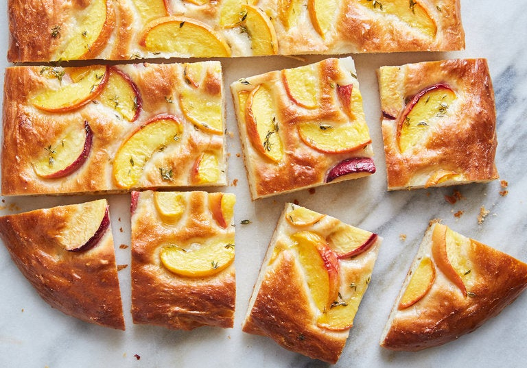

Peach Foccacia with Thyme

Description
This lightly sweet, slightly savory focaccia is delicious any time of day: Sprinkle the top with sugar after brushing it with melted butter and serve it alongside eggs for a special brunch. Or skip the extra sugar and add it to your next cheeseboard (it’s terrific with a sliver of salty cured meat and a wedge of hard pecorino). For cocktail hour, top it with honey and goat cheese for a lovely appetizer. But it’s really best at its simplest — devoured with your hands, straight out of the oven.
Ingredients
- 1½ cups warm water (110 to 115 degrees)
- 1 (¼-ounce) package active dry yeast (2¼ teaspoons)
- 6 tablespoons/75 grams granulated sugar
- ½ cup/115 grams unsalted butter (1 stick)
- 3¾ cups/515 grams bread flour
- 1 teaspoon kosher salt
- 1 large egg, lightly beaten
- Nonstick cooking spray, as needed
- 2 large peaches or other stone fruits (about 12 ounces total), halved, pitted and sliced into ¼-inch-thick wedges
- 1 tablespoon fresh thyme leaves, plus 6 sprigs
Steps
- In the bowl of a stand mixer fitted with a dough hook, combine the warm water, yeast and 1 tablespoon sugar. Let stand until foamy, about 5 minutes. Meanwhile, melt ¼ cup/60 grams butter and set aside.
- With the mixer on low, add the flour, salt, egg, 3 tablespoons sugar and melted butter. Continue until the dough is almost completely smooth and elastic, about 5 minutes. The dough will be very sticky, but no need to add extra flour. Scrape down the sides of the bowl, cover the bowl with plastic wrap and leave it in a warm, draft-free spot until it has doubled in size. (This could take anywhere from 30 minutes to 2 hours.) Gently punch the dough down, scrape the sides down and cover again. Let the dough rise one more time, about 30 minutes.
- Toss the peaches with the remaining 2 tablespoons sugar and the thyme leaves. Heat the oven to 400 degrees. Melt 2 tablespoons butter and spread evenly on a rimmed baking sheet. Tip the dough onto the prepared sheet and use your fingers to stretch it out to a large oval, roughly 10-by-15 inches. Allow the dough to rise, uncovered, in a warm spot to about ¼ inch above the edge of the pan.
- Without deflating the dough, use your fingers to make dimples all over the surface. Gently top the dough with the peaches and the sprigs of thyme, leaving any extra liquid from the fruit in the bowl. Bake until golden brown, puffed and set, 20 to 25 minutes.
- While the foccacia bakes, melt the remaining 2 tablespoons of butter, and gently brush melted butter over the focaccia. Let cool slightly in the pan on a rack, then slip the focaccia out of the pan onto a cutting board, cut into squares and serve warm.